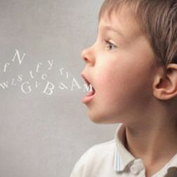
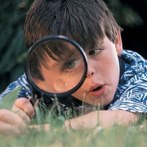
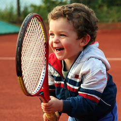
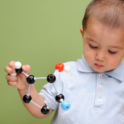
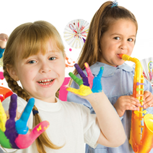

-

Lenguaje y comunicación
Lenguaje oral y Lenguaje escrito
-
Pensamiento Matemático
Número - Forma, espacio y medida
-

Exploración y conocimiento del mundo
Mundo natural - Cultura y Vida social
-

Desarrollo físico y salud.
Coordinación, fuerza y equilibrio - Promoción de la salud
-

Desarrollo personal y social.
Identidad personal - Relaciones interpersonales
-

Expresión y apreciación artísticas.
Expresión y apreciación musical, Expresión corporal y apreciación de la danza, Expresión y apreciación visual, Expresión dramática y apreciación teatral.